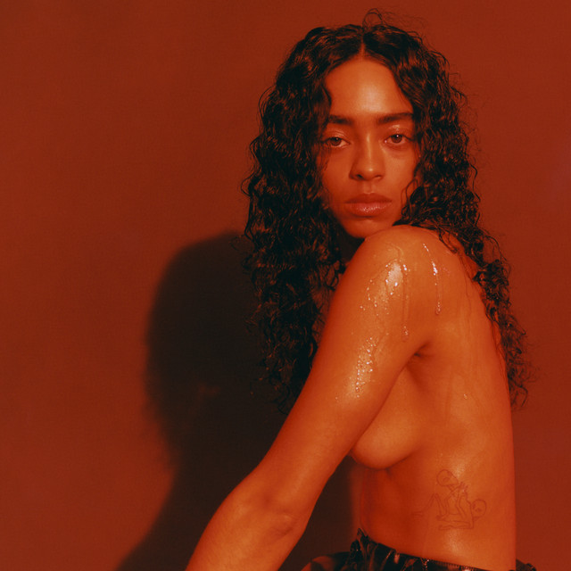

Kelsey Lu was born in Charlotte, North Carolina and had a strict Jehovah's Witness upbringing. Both of Lu's parents are musicians: their father is a percussionist, their mother a pianist. Lu began studying classical composition at age 6, learning piano, violin, and cello. At age 18, Lu left their family home to attend the University of North Carolina School of the Arts on a scholarship. A year later, they dropped out of the school.

elsey Lu recorded their debut EP, Church, in a church in Greenpoint, Brooklyn.